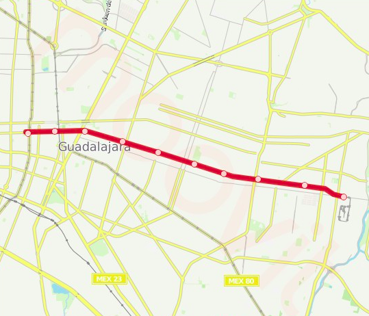

Tren Ligero: Línea 2
Estado de línea:
Horarios y paradas
La línea TL-2 de tren tiene 10 paradas desde Tetlán hasta Estación Juárez. Horarios del tren TL-2: comienza a operar a las 5:00 y finaliza a las 23:00. Los días de operación son todos los días hábiles.
Estaciones
-

Juarez
Federalismo y Juárez, Centro, Guadalajara, Jal.
-

Plaza Universidad
Zona Centro, 44100 Guadalajara, Jal.
-

San Juan de Dios
San Juan de Dios, 44360 Guadalajara, Jal.
-

Belisario Dominguez
San Juan de Dios, 44360 Guadalajara, Jal.
-

Oblatos
Javier Mina entre Zavala y Negrete, Guadalajara, Jal.
-

Cristobal de Oñate
La Penal, 44730 Guadalajara, Jal
-

San Andres
Javier Mina y Felipe Ángeles, Guadalajara, Jal.
-

San Jacinto
San Andrés, 44810 Guadalajara, Jal. Guadalajara, Jal.
-

La Aurora
Agustín Yáñez (La Florida), 44790, Guadalajara, Jal.
-

Tetlán
Tetlán, 44820 Guadalajara, Jal.
Mapa de la línea 2 de tren ligero
Horarios de línea 2
La línea 2 de tren ligero opera todos los días hábiles. Horario regular de operación: 5:00 - 23:00
Lunes 5:00 - 23:00
Martes 5:00 - 23:00
Miercoles 5:00 - 23:00
Jueves 5:00 - 23:00
Viernes 5:00 - 23:00
Sábado 5:00 - 23:00
Domingo 5:00 - 23:00